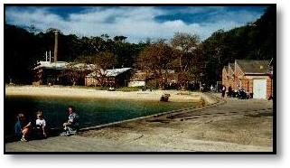
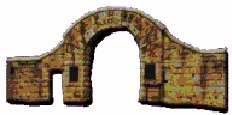
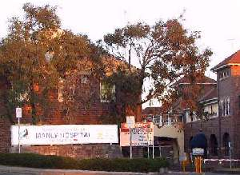

|
is working with Government agencies towards the establishment of Car-rang-gel Sanctuary on North Head at the gateway of Sydney Harbour - a flagship for Australia's environmental resolve and a celebration of our natural and cultural heritage. |
Car-rang-gel Sanctuary on North Head, Sydney

|
|
|
|
|
|
|
|
|
Research | Volunteering |
|
North
Head as part of the larger picture of Australia
written by Judith Bennett
When sea waters filled
the river valley and formed Sydney Harbour, the hilltop which we now call
North Head was made an island. It was readily accessible from the area
which is now Manly and this made it suitable for ceremonial use by Aboriginal
men and women of high degree. This use continued for thousands of years
until the technological advances and curiosity of Europeans led to voyages
of exploration to Australia
The urbanisation of Europe caused social dislocation and disorder, which resulted in the transportation of convicts to Australia. European arrivals in Australia towards the end of the 18th Century brought diseases with them against which the Indigenous people had no immunity and for which the medicine men had no cures.
|
During the 19th Century, colonisation of Australia took place with increasing numbers of immigrants arriving to farm or to search for gold. Some of these people arrived with disease and were quarantined at North Head. A large area of North Head was "commandeered" for this purpose but subsequently a portion was set aside (St Patrick's estate) to train priests for the newly dominant culture. Experiments were conducted at Quarantine Station to determine the cause of the disastrous plague that killed so many residents of Sydney at the beginning of the 20th Century. Many of those infected with plague were moved to the QS for quarantine. |
 Quarantine Station Wharf |
Quarantine Station history was influenced by the transition in the late 19th Century to steamships and in the mid 20th Century to air travel. The speed of travel, the impact of immunisation practices, the increasing ability to control infections and the high level of technology needed to treat rare infectious diseases eventually made the Quarantine Station irrelevant. The pattern of trade with Asia is reflected in Quarantine Station history including the impact of the White Australian policy introduced to curb the immigration of non-European people to Australia early in the 20th Century. This policy is reflected in the arrangement of buildings at Quarantine Station - there was a building specifically for Asiatic people.
During World War II, displaced people including boatloads of children from Britain arrived at QS. The aftermath of World War II with the subsequent wave of immigrants to Australia from Eastern Europe and Mediterranean countries is reflected in the records of those quarantined after 1945.
The Wars of the 20th Century have influenced the developments on North Head with land commandeered by the Commonwealth for the Artillery School and installations built on North Head for the defence of the Harbour. With the technological advances of the late 20th Century, these types of defence for the Harbour are no longer needed.
|
Work on North Head The Sydney Harbour Bridge, opened in 1932, was partly built by people glad to get work in the Great Depression as was the wall and arch at the former gateway of the Quarantine Station. The arch was named after 'Archie' Parkhill, a former MP for Warringah and a Federal Minister. The Quarantine Station was in need of repair when it was handed over to NSW in 1984. Many apprentices, who were finding it hard to get work, were employed in a job creation scheme at QS in the 1980s. |
 Arch at the gateway on North Head |
A further development towards the end of the 20th Century was the enrolling via internet of international volunteers to work for conservation of natural or cultural heritage. Conservation Volunteers Australia administered these projects, some of which have involved work on North Head.
|
Health facilities on North Head The rapid increase in population in the Manly area, particularly after the opening of the Harbour Bridge, created the need for the Manly District Hospital which was built in 1929 on land no longer needed for the Quarantine Station. The future of Manly District Hospital on North Head became a matter of public debate towards the end of the 20th Century. The opening of Northern Beaches Hospital in 2018 saw the closure of Manly Hospital. Across the road, Bear Cottage has been set up to house the families of children with terminal illness. Sailors with venereal disease were housed in QS buildings that later became the Police Academy. Towards the end of the 20th Century, Parkhill Cottage on North Head was made available for day care of elderly people, which reflects the changing demographics of Australia. |
 Manly Hospital |
Impacts of technological changes
The 20th Century has seen many lifestyle changes, including the increase of disposable income. This, together with technological changes to transport, resulted in a rapid expansion of tourism and travel particularly towards the end of the century. With a global recession, airline company collapses and international unrest to begin the 21st Century, there is uncertainty concerning the future level of tourism.
The increase in disposable income has also resulted in a rapid increase in personal transport devices. The roads on North Head allow for private vehicles to transport people out to viewing platforms. Future uses for North Head must be planned with creative alternatives to private vehicles and could involve closing the whole of North Head to private transport.
This availability of disposable income has resulted in large numbers of private water craft all of which have in impact on the Aquatic Reserve adjoining QS. There may be a need to legislate a reduction in the freedoms of people to use high impact vehicles and water craft in the interests of conserving the environment and protecting the rights of other citizens (and wildlife) to an acceptable noise level.
The predictions from the 19th Century that people would overpopulate the world with disastrous results together with the advent of Space Travel, have caused an increasing proportion of people to regard the world as a finite planet and to take note of disappearing species, pollution and degradation of the environment. The catch-cry of the 19th and early 20th Centuries in Australia was "populate or perish" with a big emphasis on the importance of immigration.
Immigration is still an important policy for Australia, but now in Australia we are seeing species threatened with extinction and the polluting impacts of increasing population on our environment. Australians have mostly lost their "cultural cringe" towards the rest of the world, and with wide-spread internet contacts for large numbers of Australians, we have become global citizens sharing information about the environmental problems common to the whole planet. In the 21st Century threatened species on North Head will be in the spotlight of public attention.
It
is most important to ensure that all activities on North Head are planned
to ensure there are no adverse impacts on any threatened species.
Sydney has become a city of 4 million inhabitants. The sewage treatment plant on North Head is a symbol of the challenge of finding ecologically sustainable ways to accommodate this number of people in addition to the predicted increase in population of Sydney. North Head is the collection point for sewage for a large area of Sydney and the 20th Century response was to partially treat the effluent then pump it some distance out into the ocean whilst trucking some of the sludge away inland for further treatment and re-use.
Technology existed towards the end of the 20th Century to provide more sophisticated solutions than at present. There needs to be opportunity to visit the Sewage Treatment Plant and see explanations about the latest technological solutions to the provision of good quality water and the treatment of sewage.
Beginning of the 21st Century
During the year 2000, Sydney hosted the Olympic Games. The Government decided that in the years leading up to this event, all costs would be borne by the State so that there would be no residual debt left after the event. This explanation was given in justification for a reduction in funding for schools, hospitals, roads, sewage and National Parks, etc.
In 1998, Mawland Development Pty Ltd were chosen as the preferred tenderers to lease the Quarantine station, but protests caused delays to the process of finalising a lease. The Conditional Agreement to Lease the Quarantine Station was signed at the beginning of 2000 with Mawland Hotel Mangement Pty Ltd with the expectation that the handover would be at the beginning of May. This would have given Mawland an opportunity to use the Station for accommodation during the Olympics but the level of public protest prevented this. The huge rise in tourism in New South Wales expected to follow the Olympics did not really happen due to other events in the world - global recession and the threat of war. Late in 2003, NPWS notified the public of their intention to sign a lease with Mawland Q-Station Pty Ltd, but it was not until 2008 that Mawland Hotel Management began operating the site. Their lease was on-sold to hotel developer Glenn Piper in 2021.
The Opening Ceremony of the Olympics was seen by many millions of people around the globe - it depicted a curly-headed caucasian girl being led to an understanding of the dreamtime and the wonders of Nature by an Aboriginal elder. This was deeply moving and seemed to indicate that the wide-spread moves towards reconciliation in Australia had public acceptance - and that Aboriginal people were prepared to share their culture with other citizens of Australia. However, progress since then has been slow.
Aboriginal Heritage Study
Late in 2000, when the Aboriginal heritage study of North Head was published, it was amazing to read of the connection between Homebush Bay and North Head. Homebush Bay was the trading post - the place for all to meet. Invited people were able to go from there to North Head for healing or to arrange ceremonial burials. North Head was the special domain of the clever people.
Homebush Bay has become the trading venue for the Sydney Easter Show, which is a link between country and city.
Can we similarly echo uses of North Head now to uses from the past. Will we be able to provide healing for the living, honour to those who have died and wisdom for the future on North Head?
What will be the role of North Head as the 21st Century proceeds?
The United Nations predicts that the greatest killer of the 21st Century will be clinical depression. We need clever people to design healing practices and educational life-style experiences that entice people to request to move from "Homebush Bay" (trading, commercial interests) to "North Head" holistic health. We need to experiment (e.g. with using Australian plants for healing) and we need to promote holistic health practices that encompass the best of all cultures and religions, that encourage the full potential of each person, that provide multicultural approaches and that explore the health resources of our unique Australian environment, including its plants and animals.
Sydney Harbour Federation Trust
Seven
former defence establishments in Sydney Harbour (North Head School of
Artillery, Middle Head-Georges Heights Chowder Bay, Cockatoo Island, Snapper
Island, Woolwich Dock and Parklands, Macquarie Lightstation, former Marine
Biological Station Watsons Bay) have been declared redundant to defence
needs and are being managed by Sydney Harbour Federation Trust (SHFT)
which was set up in 2001 to work for ten years towards a sustainable use
for each site prior to hand-over to NSW.
Visit the Sydney Harbour Federation
Trust website to read about progress on each of those sites.
As the Trust identifies, North Head is "an island-like headland" with the School of Artillery site on its crown. "The island-like isolation and remoteness of North Head has contributed to the survival of its natural form". The geological diversity of North Head is unique and it is home to a rich diversity of plants and animals, including the Critically Endangered Eastern Suburbs Banksia Scrub ecological community, and endangered populations of Long-nosed Bandicoots and Little Penguins. The Trust also quite properly highlights "the interconnectedness of so many of the elements that make North Head such a special place". Although the Trust has control only over the former Defence lands, it identifies a strong need to plan holistically for the whole of North Head. The Trust sees North Head as an opportunity to create "a form of sanctuary, where in a city of four million, people would be able to appreciate its sense of remote isolation, its unique ecology and how successive generations have used and responded to its location and form". Therefore, the former School of Artillery site has now been established as "North Head Sanctuary". The official opening was held in 2007.
In 2002, the North Head Sanctuary Foundation Inc was established to work with SHFT and other agencies on North Head to bring about the vision of an ecological sanctuary across all tenures on North Head.
written by Judith Bennett
t|
|
|
|
|
|
|
|
|
Research | Volunteering |
|
|
Email: |
This page was coded for the North Head Sanctuary Foundation
by Judith Bennett.
Copyright
and Disclaimer